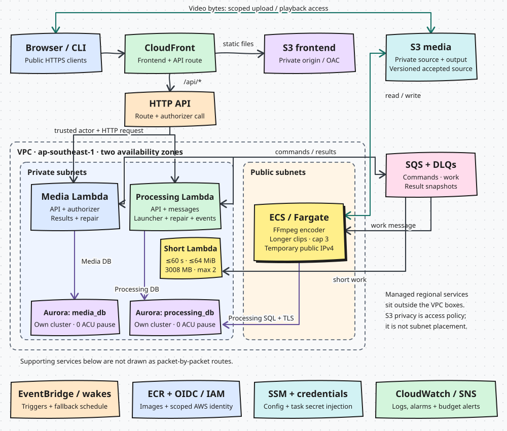

Complete study edition
FlickPond, from basics to details.
Every chapter in one place. Printing includes all depth levels, diagram notes and question answers.
Chapter 01
What did we actually build?
The users and stack; inherited capability versus GC2 work.
We built FlickPond into a reusable cloud video-processing platform. An owner uploads a video, conversion runs in the background, and the owner follows status and plays the result. Browser and Publisher CLI share one public contract. GC2 separated responsibilities, ran on AWS, proved reuse, and made delivery and recovery repeatable.
Level 1 / Understand the basics
Start with a person, not an AWS diagram
Maya has a folder of training clips. She wants usable videos, a result per file, and retry of a failed conversion without re-uploading. Arun wants the same for one browser video. Neither should run FFmpeg, queues or storage permissions.
The app accepts an upload and records a job, a background worker converts it, and the client asks for status. Acceptance means durably accepted, not encoded.
What the owner experiences
A journey, not a promise every job succeeds or yields HLS.
Read all diagram notes
- Upload — Reserve, upload to S3, finalize. S3 upload alone is not an accepted job.
- Track — Returns before encoding ends; owner polls.
- Play — Fresh temporary playback access.
- Recover — New attempt reuses the accepted source.
What problem does FlickPond solve in one sentence?
Why does the upload response not wait for conversion?
Check the source
Original personas and business scope · Current use-case catalogue
Level 1 / Understand the basics
The languages and tools, one job each
| Tool | Plain-English job | Where it appears |
|---|---|---|
| Python 3.12 | APIs, workers, CLI, automation | media/, processing/, publisher/, scripts/ |
| FastAPI + Pydantic | HTTP endpoints; validate requests and responses | Media and Processing apps |
| JavaScript, HTML, CSS | Browser UI; no production npm build | frontend/ |
| SQLAlchemy + PostgreSQL | Relational data and transactions | One database per service |
| Alembic | Ordered schema changes | Owner migration directories |
| FFmpeg / FFprobe | Inspect and convert video | media_engine/, finite worker |
| Docker images | Package code and runtime | Media, Processing, worker |
| AWS + CloudFormation | Run the platform; describe resources | Python renders the template |
| GitHub Actions | Automated checks and delivery | .github/workflows/ |
Language, framework, database and cloud service are different things: Python is the program, FastAPI the API, PostgreSQL the state, Lambda or Fargate the runtime. Versions need no memorizing.
Frontend is browser JavaScript with vendored playback libraries; Node and Vitest only run tests. Publisher is a Python CLI. Infrastructure is CloudFormation rendered from Python, not Terraform or Kubernetes.
Is the frontend a React or Node server application?
Level 1 / Understand the basics
Four personas, two product clients
| Persona | Need | What to demonstrate |
|---|---|---|
| Maya · course coordinator | Submit a folder, see every outcome, retry failures | Publisher batch, then status and playback |
| Arun · independent trainer | Upload and check one video | Browser upload, status, MP4, owner isolation |
| Jules · application developer | Reuse the platform without service internals | OpenAPI and Publisher over public HTTPS |
| Sam · platform operator | Change worker capacity; release safely | Capacity results, delivery identity, restore evidence |
Fictional planning personas, not interview findings. Accounts own their uploads; no shared team ownership, student access, LMS or admin dashboard.
How many applications demonstrate reuse?
Check the source
Persona definitions and explicit boundaries · Publisher behavior and contract
Level 2 / Explain the design
Why call this a platform?
A platform exposes capability through a stable contract. FlickPond's is owner-scoped intake, processing and output access; browser and Publisher use it over HTTP with no database passwords, queue credentials or encoder copy.
The claim is demonstrated reuse by a second client, not a marketplace or external adoption.
| Use case | Promise | Primary stakeholder |
|---|---|---|
| UC-1 | Authenticate; accept verified upload | Maya / Arun |
| UC-2 | Process accepted work asynchronously | Maya / Arun |
| UC-3 | Status and owner-authorized playback | Maya / Arun / Jules |
| UC-4 | Retry from stored source | Maya / Arun / Jules |
| UC-5 | Batch publish via CLI | Maya / Jules |
| UC-6 | Vary Processing capacity independently | Sam |
| UC-7 | Release Processing; show restore | Sam |
What concrete evidence supports the platform claim?
Check the source
UC-1 through UC-7 · Published Media API · Client contract and import-boundary tests
Level 2 / Explain the design
What came from GC1, and what GC2 changed
| Stage | What it means | What changed next |
|---|---|---|
| Inherited Project 1 | FastAPI app, accounts, uploads, jobs/retry, Redis/RQ, MinIO, nginx, FFmpeg, MP4 and best-effort HLS | Reshaped, not rebuilt from zero |
| GC2 proposal | Media/Processing split, synchronous SubmitJob, Redis/RQ, service token | Built: SQL outbox/inbox, SQS, trusted Gateway actor |
| AWS V1 | Per-run stacks, separate data, three images, finite Fargate tasks, experiments | Accepted V1 tag stays immutable |
| Persistent V2-live | One dc2-live environment updated in place, bounded launcher, idle pause, automated delivery | Quality and release checks tightened |
| 20 October release | Shared credential policy, fewer dependencies, safe errors/cache, exact-source gates | Runtime 629119c delivered |
| 21-22 October close-out | Lambda short-encode lane (#93), one Aurora cluster per service (#94, AD-29), release scan of candidate and rollback image (AD-28), code-scanning triage | Current Main; architecture decisions AD-01 to AD-29; limitations AISS-01 to 05 |
The story is architecture and operational maturity: separated data ownership, durable async work, a second client, managed services, tested failures. Tests raised line count; do not claim LOC fell.
Level 3 / Defend the details
Find the real implementation without getting lost
| Directory | Read it for | Do not confuse it with |
|---|---|---|
| media/ | Accounts, ownership, upload validation, read/playback | The FFmpeg worker |
| processing/ | Jobs, attempts, leases, messages, recovery, finite worker, short lane | Media’s user database |
| media_engine/ | Probe and conversion mechanics | HTTP auth or queue scheduling |
| contracts/ | Message shapes, actor identity, Gateway adaptation | A shared database model |
| delivery/ + runtime_support/ | Shared transport and runtime policies | A third business service |
| publisher/ + frontend/ | Two clients of the public contract | Privileged operator tools |
| scripts/aws/ + deploy/aws/v1/ | Infrastructure and release automation, live too | Proof the runtime is per-run V1 |
| app/ + inherited stacks | Retained Project 1 behavior, regression tests | The current AWS request path |
| docs/results/ + docs/release/ | Measured outcomes, delivery records | A live dashboard |
When documents and code disagree, check date and mode: README holds older snapshots, the proposal an earlier plan. Use the engineering handoff for latest delivery facts. Moto tests emulate AWS; a real AWS receipt is different evidence.
Why are Redis and MinIO dependencies still visible if the live system uses SQS and S3?
Chapter 02
How the platform fits together
Domain boundaries, durable hand-offs, worker paths and trade-offs of Media and Processing.
Media owns people, uploads and playback access; Processing owns jobs and encoding attempts. They coordinate through versioned messages, each on its own database cluster. A worker (Lambda for short clips, Fargate otherwise) turns a pinned source version into outputs; Media exposes them only to the owner.
Level 1 / Understand the basics
Start with the work the system promises
An owner submits a video, asks for a change, and later watches the result. The visible item is an Asset, owned by one account; its ID is also the public job ID.
An Asset has one Processing Job with numbered Attempts. A retry makes a new attempt from the accepted source, so we know which try failed and which output belongs to which.
A simple mental model
Click a box to see which context owns it.
Read all diagram notes
- Owner — Asset, source pin, status, playback right.
- Job — Processing’s lifecycle for the request.
- Attempt — One numbered run.
Why are Job and Attempt separate?
Check the source
Ubiquitous language · Use cases · Media Asset model · Job and Attempt models
Level 1 / Understand the basics
From client bytes to an accepted command
The client requests a reservation (request key, filename, content type, byte length, SHA-256). Media returns a short-lived presigned POST for a server-chosen, owner-scoped S3 key. Bytes go straight to S3, never through API Gateway or Lambda.
finalize verifies size, checksum, media signature and S3 VersionId outside SQL locks. One transaction then records the VersionId, creates the Asset and stages a submit message: the accepted source is the version Media checked.
The intake promise
A missing or changed upload is rejected before it becomes work.
Read all diagram notes
- Reserve — Fixes key and expected file facts.
- Upload — Bytes straight to S3.
- Verify — Checks bytes; records VersionId.
- Accept — One transaction: Asset plus command.
Cost: the client hashes first; abandoned writes need cleanup. Benefit: the worker reads exactly the accepted bytes. Repeats are safe: the same request key returns the accepted item; with different data it conflicts.
What if S3 has no object when finalize runs?
Check the source
UC-1 upload and finalize · Reservation, finalize · Verify, pin, adopt · Public client upload protocol
Level 2 / Explain the design
Two owners, with a deliberate seam
Media owns accounts, ownership checks, upload reservations, pinned sources, job reads, playback signing, deletion and cleanup. Processing owns jobs, attempts, leases, retries, cancellation, output records and encoder claims.
Each service has its own Aurora cluster, database and role: Media media_db (original), Processing processing_db (copy-on-write clone; AD-29, #94). No cross-database joins or shared ORM models; IDs crossing the seam are contract values. Both auto-pause at 0 ACU.
Database split (AD-29)
| Before (V1) | Now (V2-live) | |
|---|---|---|
| Clusters | One Aurora cluster | One per service |
| Media | media_db, shared | media_db, original |
| Processing | processing_db, shared | processing_db, clone |
| Failure / capacity | Shared | Separate; pause at 0 ACU |
Rehearsed on a throwaway stack (docs/results/engineering-20261021/database-split-rehearsal.json); snapshot kept; CD run 39644028238.
Media keeps a ProcessingProjection, a local read model of the latest accepted Processing state, so status reads never touch Processing’s database. Before the first result it shows accepted, which Processing never emits.
Who owns each decision
A narrow contract at the seam; neither service reads the other’s tables.
Read all diagram notes
- Media — Ownership, accepted bytes, playback links.
- Contracts — Versioned values; no shared tables.
- Processing — Current attempt; who may claim or finish.
Identity and playback stay in Media: those rules need owner and Asset together.
Is the Media authorizer a third service?
Level 2 / Explain the design
Messages carry work across the seam
Services never call each other synchronously to create a job. Media writes an outbox row beside the Asset change; a repair publisher sends it to processing-commands. Processing records it in its inbox, creates Job and Attempt, and stages work for processing-work. Snapshots return on media-results and update the projection.
Outbox: a commit and an SQS send cannot be atomic, so state and send-intent commit together and a publisher retries; a claim token stops a stale publisher acknowledging a row it no longer owns.
Standard SQS delivers at least once and can reorder. The inbox stores message ID and body hash in the domain transaction: same ID and body is a no-op, same ID with different content a conflict. Repair rebuilds lost work from SQL. Recoverable, not exactly once.
A per-Asset SubmissionGuard serializes submit, retry and cancel. Snapshots carry increasing state_version and attempt identity; Media ignores older versions, rejects conflicts and refuses outputs outside the job/attempt path.
Durable hand-off
Queues move work; SQL records what is committed.
Read all diagram notes
- Commit — State and intent in one transaction.
- Publish — Sent outside SQL lock; claim token.
- Consume — Deduplicate, commit, acknowledge.
- Repair — SQL is authority when delivery fails.
Does inbox deduplication mean exactly-once processing?
Level 2 / Explain the design
From a worker lease to owner playback
A worker asks Processing to claim the Job and Attempt. Processing checks source, owner and Asset identity, current attempt, submission guard and finite task binding, then issues a lease token on the database clock; heartbeat and finish must present it before the deadline.
The worker downloads the pinned source, probes, validates edits and runs FFmpeg. Outputs go under jobs/{job_id}/attempts/{attempt_id}/: one primary output, HLS optional. Terminal state commits before the SQS message is deleted. A worker that loses its lease is fenced out; a retry makes a new Attempt.
Short-lane routing (AD-13, AD-22, #93)
Benchmark sl1021: queue wait 0.26 s vs 32.6 s Fargate; processing 5.3 s vs 8.0 s; submit to done 45.2 s warm, 92.0 s cold vs 87.7 s; $0.0003 vs $0.0021 per encode; 5 jobs/arm, 0 failures. 35-80 s unexplained: 20 s target still missed (AWS page).
Read all diagram notes
- Dispatch — short_lane.work_lane sees only source size. Larger, or no short queue URL, goes to the standard queue.
- Lambda probe — After claim, download and probe, check_probe enforces duration and height; failure raises NotAdmitted.
- Encode on Lambda — 3008 MB, 900 s, 2 GB /tmp, SQS mapping, MaximumConcurrency 2. Wakes no Fargate.
- Else Fargate — Not admitted: old attempt abandoned, attempt+1 queued on the standard lane. A Lambda failure retries on Fargate, never back.
Media accepts a result only if the source matches its pin and output keys belong to the attempt, after version and attempt fences. MP4: owner check, then a short-lived signed S3 URL. HLS: private uncached playlist, segments redirected to signed URLs. A foreign owner or unknown Asset looks not found.
Work becomes playback
Projection validation and owner authorization make playback safe.
Read all diagram notes
- Claim — Temporary authority.
- Encode — Pinned input; namespaced outputs.
- Project — Only a current, valid snapshot.
- Play — Owner check, then signed access.
Failure example: attempt 1 stalls, the owner retries, attempt 2 starts. Worker 1 waking later fails the lease check; a late result fails the attempt number and state version. Its output stays under attempt 1.
Why can a signed link expire?
Level 3 / Defend the details
Know the boundaries and the trade-offs
Separate clusters and IAM roles limit coordination but share the account, VPC and queues. Media can hold a command while Processing is down; encoding waits for capacity. V1: bounded batches started by a person. V2-live: launcher wakes finite Fargate tasks (cap 3); short clips use Lambda. Neither is always-on.
The Publisher CLI is an integrator: public HTTPS only, no application, database or storage imports. contracts/ is the message language between images.
Root app/ and app/worker/ are the earlier Redis/RQ monolith. Current paths: media/, processing/, contracts/, delivery/, runtime_support/. Current design: SQS, SQL outbox/inbox, finite workers.
Design test: does an abstraction protect a real invariant, boundary or repeated policy? Repositories centralize owner-filtered SQL, services compose actions, adapters hold transport, contracts define boundary values. Pass-through wrappers, a service per noun or a generic workflow engine only add navigation.
Chapter 03
AWS: a small cloud, with clear boundaries
One upload through the live V2 AWS system: what each service owns, how work moves, and where limits remain.
The browser reaches our application through CloudFront and an HTTP API. Separate Media and Processing Lambda applications own their data, queues and Aurora cluster. Video bytes go straight to private S3. Clips of 60 s or less encode in a Lambda; longer ones on finite Fargate workers that a bounded launcher starts on demand.
Level 1 / Understand the basics
Start with the shape of the system
Media owns people, assets, upload reservations, source ownership and playback grants. Processing owns jobs, attempts, retries, cancellation and worker leases.
CloudFront serves the frontend from private S3 and forwards /api/* to an HTTP API with Media and Processing routes. A Media Lambda authorizer validates the login cookie; each service checks the actor against its own records.
A request crosses three boundaries
Read all diagram notes
- Browser — Never receives a database credential.
- CloudFront — Static files from private S3; API requests pass uncached.
- HTTP API — Invokes the matching domain Lambda. Login and health are public.
- Domain Lambda — Checks ownership; writes only its own database.
Check the source
Level 1 / Understand the basics
Follow the bytes separately from the requests
Media reserves an owner-scoped S3 key and returns a short-lived presigned POST; the browser sends the file to private S3, bypassing API Gateway and Lambda bodies; Media checks the object and adopts its version as the source.
A client-supplied key proves neither ownership nor unchanged bytes. A worker reads the accepted version and writes job outputs, but cannot change the source, read Media's database or list objects.
The upload path carries bytes directly
Read all diagram notes
- Reserve — Owner-scoped reservation with a bounded presigned POST.
- Upload — Bytes go browser to S3, avoiding API and Lambda payload limits.
- Finalize — Media checks the object and binds an immutable version to the asset.
- Encode — A worker reads the accepted source and writes to its job prefix.
Check the source
Level 2 / Explain the design
Two databases, one Aurora cluster per service
Each service owns a database on its own Aurora Serverless v2 cluster (AD-29, #94), with separate credentials and schema history. Services exchange versioned messages, never cross-domain SQL.
Before and after the database split (21 Oct)
| Before (V1, early V2) | After (AD-29, live) | |
|---|---|---|
| Clusters | One, two databases | Two, one each |
| Media | media_db, shared | media_db, original |
| Processing | processing_db, same cluster | processing_db, clone |
| Failure, capacity | Shared: one can wake or stall both | Separate; each pauses at 0 ACU |
| Cost | One cluster | Second cluster's storage and wake |
Cleanup dropped each cluster's copy of the peer's database. Per-run stacks keep flags off (AD-22).
Rehearsed on a throwaway stack (database-split-rehearsal.json); pre-split snapshot kept; CD run 39644028238 green; Processing idle during the split.
Pause is point-in-time: 0.0 ACU at 18:07 UTC on 19 October, about 56 minutes after the last upload (after #273, on daee44b, pre-split); not proof of monthly cost, and scheduled rescans can briefly wake SQL. Databases sit in private subnets across two AZs, reached over TLS through narrow security groups; connections are per invocation, since an open one stops Aurora pausing.
Level 2 / Explain the design
Messages coordinate work; SQL remains the record
Three SQS queues carry Processing commands, Processing work and Media results, each with a dead-letter queue. Messages hold identifiers and versioned facts, never video, secrets or presigned fields.
Outbox: commit the change and message intent in one SQL transaction; a publisher sends later; the receiver deduplicates. SQL plus SQS is not one transaction, so duplicates are expected and repair matters. EventBridge is a hint, not the owner of job state.
Control metadata wakes a worker
Read all diagram notes
- Commit — Job transition and work intent in one SQL transaction.
- Publish — A small work message; the queue never stores video.
- Wake — A Lambda wake and a scheduled tick check SQL, queue depth and ECS tasks.
- RunTask — Launcher reserves a slot; ECS starts a task with a deadline and unique identity.
Check the source
Level 2 / Explain the design
Why Lambda coordinates and Fargate encodes
Lambda: short event-driven work (APIs, handlers, repair, launcher). Fargate: the FFmpeg pipeline with more CPU and memory, then stop.
Short-lane routing (#93, live on dc2-live)
Per-run stacks keep the lane off by default (AD-22).
Read all diagram notes
- Job accepted — Launcher reserves work in SQL and checks length, size, height.
- Short clip? — All three limits must hold; an executor probe finding a longer clip returns it to the standard lane.
- Lambda lane — SQS mapping on ProcessingShortWork; 3008 MB, 900 s, 2 GB /tmp, MaximumConcurrency 2.
- Else Fargate — 2 vCPU, 4 GiB, one encode per task; 0 to 3 to 0.
The launcher counts running, stopping and unresolved launches against a cap of three, reserving before calling ECS and resolving ambiguous replies by task identity or same-token replay. Tasks have finite lifetime and deadline.
| Choice | Good fit | Cost or limit |
|---|---|---|
| Lambda, coordination | APIs, handlers, repair, launch | Cold starts; concurrency; per-call timeout. |
| Lambda, short encode | Clips of 60 s or less: no task start | Size, length, height limits; concurrency 2. |
| Fargate task | Longer FFmpeg work | Startup time; every running second costs. |
| Warm workers | Cut the wait | Idle cost; not used. |
Check the source
Worker size · Rendered Lambda · Launcher cap · Short-encode Lambda lane design · AD-13 and AD-22
Level 2 / Explain the design
Subnet choices and the egress tradeoff
The physical architecture, on one map

Green: media bytes. Purple: SQL. Dark: requests and messages. Scroll sideways on a phone or open the full SVG.
Open the full-size diagram ↗Lambda and Aurora: private dual-stack subnets across two AZs. No NAT Gateway, paid interface endpoint, EC2 host, load balancer or Redis. Lambda reaches SQS, Parameter Store and ECS over IPv6 egress-only routes, plus an S3 gateway endpoint (also for image layers).
Fargate and migration tasks use public subnets with a temporary public IPv4; security groups allow their database connection and the database stays private. This avoids a NAT Gateway but gives those tasks public egress.
Dual-stack is a cost choice. The template defines the routes; the live smoke shows upload-to-playback works, not every route.
Check the source
Level 3 / Defend the details
Images, credentials and operational visibility
ECR holds versioned images, deployed by immutable digest. The worker role reads sources and writes outputs, with no Media database access; ECS injects its Processing SQL credential through the separate execution role.
Secrets are exact Parameter Store SecureString references, read per function over TLS. GitHub Actions gets short-lived AWS credentials via OpenID Connect, no stored key (not the site's user login).
CloudWatch alarms watch failure and backlog signals; EventBridge schedules repair and launch. A monthly Budget alerts via SNS but is no spend ceiling. 13 of 13 alarms OK at 14:57 UTC on 19 October (earlier source): not proof of coverage. Live V2 is persistent, launcher on by default; not the V1 per-session workflow.
Security scans feed the Security tab
Accepted unfixed: CVE-2025-52290 (ffmpeg; no Debian 13 fix; finite worker, no inbound network).
Read all diagram notes
- Scan — CodeQL (python, JS/TS, actions), Trivy per image, Ruff security (Bandit), gitleaks.
- DAST — Authenticated scan of the running app.
- SARIF upload — To the repository Security tab; Dependabot alerts on.
- Triage — 22 Oct: 12 High CodeQL alerts, all in test, proof or dev-script code, dismissed with reasons. Open: ZAP low/info on OpenAPI doc pages.
Release admission (AD-28) scans the candidate and retained rollback image; an advisory hitting only the retained image is handled without bypassing the gate, and the deploy smoke retries while the database wakes.
Check the source
ECR · GitHub OIDC trust · Credential scope · Live alarm snapshot · Persistent V2 launcher · Scanners · Accepted unfixed CVE-2025-52290
Level 3 / Defend the details
What the live measurements teach us
19 October, three clips. Fargate scaled 0 to 3 to 0, but about 37 s passed from queued work to first processing (about 25 s task startup), missing the 20 s target. The launcher woke within about 1 s. No source SHA recorded (dc2-live-worker:1, pre-#272/#273): historical.
Nine-clip backlog. 239 s, 2.26 jobs per minute, peak three workers, one fixed-cap run: no capacity guarantee. 18 sends for nine jobs; daee44b recheck: 9 of 9 done, empty queue, no purge.
Short lane vs Fargate (sl1021, 5 jobs per arm)
| Measure | Lambda lane | Fargate |
|---|---|---|
| Queue wait, median | 0.26 s | 32.6 s |
| Processing, median | 5.3 s | 8.0 s |
| Submit to done | 45.2 s warm, 92.0 s cold | 87.7 s |
| Cost per encode | $0.0003 | $0.0021 |
| Failures | 0 | 0 |
35 to 80 s per job outside queue and encode is unexplained: 20 s end-to-end still missed. Five jobs per arm is small.
Why did processing take about 37 seconds to start?
Is a separate Aurora cluster per service deployed?
Does the object stay private if the browser has a signed URL?
Why keep SQL if there is a queue?
Why not encode everything in Lambda?
What does the monthly budget guarantee?
Chapter 04
From commit to running release
Follow one change through CI, an exact-source artifact, infrastructure deployment and a service release. Ask what each green check proves, and for which identity.
CI picks the evidence a change needs and records the tested source. CD accepts only a successful Main push, deploys that source, scans the candidate and the retained rollback image, then promotes service versions behind a smoke and rollback path.
Level 1 / Understand the basics
First, name the three stages
Build makes and records an image. Deploy updates infrastructure and configuration. Release moves a service alias to a candidate image and checks it. Separating them shows where a failure happened and what can be retried.
CI runs on pull requests, Main pushes, manual dispatch and weekly. A path classifier picks checks: owner lanes for fast feedback; shared inputs, workflow changes or unclassified paths select Full verification, the broad source-bound gate.
CI: decide and verify
Green means every check selected for that tier passed.
Read all diagram notes
- Changed paths — Diff against the intended base.
- Select tier — scripts/ci/policy.py picks lanes, or all lanes when uncertain.
- Run checks — Behavior, integration, browser, coverage and image jobs.
- Keep receipts — Selection record and source-bound artifacts kept for later gates.
CI records attempt, tested source SHA, selection and build receipts. CD admits only a successful push-to-Main run from this repository. Hosted receipt: Main CI 39415935595, attempt 1, on 629119c (local receipt 514914a is different).
Level 2 / Explain the design
The artifact is useful only with its identity
Tags can be reused and commit labels do not name image bytes. The build verifier records image configuration identifiers and checks runtime user (and Lambda identity); scan receipts bind to configuration and source SHA.
CI uploads per run and attempt: selection artifact, coverage fragments, image receipts, scan evidence. A missing fragment is never an empty success; the receipt’s source SHA is the tested code, not the PR head.
CD validates workflow name, event, head repository, SHA and attempt, then downloads that run’s artifacts. PR runs, fork branches named Main and manual runs are rejected.
CI run identity = repository + event + commit SHA + run ID + attempt
Candidate identity = checked-out source + image config/digest + scan receiptLevel 2 / Explain the design
Deployment and release have different rollback boundaries
CD: deploy and promote
Serialized: environment journal and account capacity are shared.
Read all diagram notes
- Accept CI run — Refuses PR, failed, foreign-repository or non-push runs.
- Deploy stack — Infrastructure and configuration reconciled; on live also the short lane and database split (AD-29).
- Release owner — Picks changed owner images, scans candidate and retained rollback image (AD-28), checks migration compatibility.
- Smoke or restore — Pass keeps the candidate; fail restores the previous alias.
Deploy includes owner image promotion and stack adoption; then the upload-to-playback smoke runs. Manual dispatch has preflight, rehearsal and image-verification modes; say which ran. Report stack update and smoke separately. Receipt: CI 39415935595, CD 39416747925 (attempt 1), source 629119c5b3bd390ce072df0a43fe926cd7a161c7.
Admission (AD-28). Scans cover candidate and retained rollback image. A new advisory hitting only the retained image becomes RETAINED_FIXABLE: listed, not blocking, gate not bypassed; the candidate must scan clean. Smoke retries a cold-database login. Run 39644028238 delivered the lane and database split.
Rollback boundary. Dropping a field can break the previous image, so releases use additive migrations and an operator attestation that both images fit the schema head. Rollback restores code and aliases, not schema.
| Stage | Does |
|---|---|
| Build | Produce and verify an image; bind receipt to source and image identity. |
| Deploy | Reconcile stack and configuration for an accepted source. |
| Release | Move one alias after compatibility checks; smoke; restore on failure. |
Level 3 / Defend the details
Use real receipts to explain failure
Full CI 39415935595 passed on 629119c (25 jobs succeeded; three intentional skips incl. two unconfigured advisory Sonar jobs). CD 39416747925 admitted it; Deploy finished 12:04:26 UTC, smoke 12:06:34 UTC: upload 204, job done, encoder exit 0, MP4 and HLS playback passed. AWS read-back matched three image manifests, ten Lambda aliases and the ECS worker definition. Point-in-time, not team acceptance.
Repairs: #281 failed at startup (misused runner context; fixed, actionlint passed five workflows). #282 caught changed bytes in a released migration; bytes restored, guard kept.
Short-encode lane routing (live, #93)
| Lane | Takes | Runs on |
|---|---|---|
| Short | Clips <= 60 s, <= 64 MiB, <= 1080p | Lambda encoder (3008 MB, 900 s, 2 GB /tmp, SQS, concurrency 2) |
| Long | Everything else | Finite Fargate encoders (cap 3, 0 -> 3 -> 0) |
| Benchmark sl1021 | 5 jobs per arm | Queue wait 0.26 s vs 32.6 s; encode 5.3 s vs 8.0 s; cost $0.0003 vs $0.0021; 0 failures |
Submit to done: warm Lambda 45.2 s, cold 92.0 s, Fargate 87.7 s (medians).
Database split (live, #94, AD-29)
| Before | After | |
|---|---|---|
| Media | media_db, one V1 cluster | Original Aurora cluster |
| Processing | processing_db on same cluster | Own cluster, copy-on-write clone |
| Both | Auto-pause 0 ACU | Auto-pause 0 ACU; pre-split snapshot kept |
Rehearsed on a throwaway stack; cleanup dropped each other’s database. Run 39644028238 green.
Missed or unrun: the 20 s end-to-end target (35-80 s per job outside queue and encode is unexplained), the V1 cap-2 scaling target, and the 30-clip workload. The rollback proof restored a bad Processing candidate from older source 7928b7c; it does not prove rollback of 629119c or of a migration.
Why can a successful CI run still be rejected by CD?
If release smoke fails, what does rollback restore?
Does a green rollback job mean the candidate worked?
Why not release by tag alone?
What is the key explanation when a deploy fails after infrastructure updates?
Check the source
Receipts, findings, outcomes and evidence limits · Candidate smoke and restored alias evidence · Release dispatch inputs and operation controls · Exact Main CI/CD admission, deployment, smoke and AWS read-back · Current engineering handoff and workflow corrections · Short-lane benchmark · Database split rehearsal · AD-13, AD-22, AD-28, AD-29
Chapter 05
How the code turns design into behavior
Trace the code by responsibility: routes, services, repositories, adapters, contracts, durable state, finite worker.
Routes translate HTTP into application calls. Services coordinate rules and transactions; repositories own repeated SQL; storage and queue modules adapt external systems; Processing's lifecycle code fences worker authority. The layers keep ownership, retries and failure behavior visible.
Level 1 / Understand the basics
Read the code from the edge inward
Start from a nameable request. media/api/uploads.py has two endpoints delegating to media.services.direct_intake; media/api/v1_jobs.py delegates reads, retry, edit, deletion. A route owns only HTTP: path, status, response model, dependencies.
A service orchestrates: direct_intake.reserve validates media type, fingerprints the request, makes an owner-scoped reservation, asks storage for a grant; finalize coordinates verification, Asset creation and command staging.
A repository is a focused persistence helper. media/repositories/assets.py:get_asset applies owner and deletion filters and returns the same not-found for unknown or foreign Assets. list_asset_pages joins Media's Asset to its own optional ProcessingProjection, never Processing's database. The caller owns the transaction.
A useful code-reading route
A reading path: follow the actual imports.
Read all diagram notes
- Route — Path, status, auth dependency, delegated function.
- Service — Business checks and orchestration.
- Repository — Owner filters, local joins, locking.
- Adapter — Translates and bounds storage, queues, HTTP.
Why not put all behavior in the FastAPI route?
Level 2 / Explain the design
Transactions make the promise precise
direct_intake.finalize finds the reservation by ID and owner, checks the request ID and returns the existing Asset on replay. It leaves the SQL transaction before storage.verify_direct_upload (HEAD plus bounded streaming GET); a row lock across network I/O invites contention.
With the exact VersionId, finalize opens a new transaction, locks the reservation, rechecks concurrent finalize or expiry, records the VersionId, creates the Asset and stages the submit message before commit: one short commit.
assets.py:fingerprint hashes canonical JSON; replay uses the (owner, operation, key) identity. Same key, different hash: conflict. A lost response never creates a second Asset.
list_asset_pages outer-joins Asset to ProcessingProjection in Media's database (the projection may not exist yet). Reading Processing's database per page would couple availability, permissions and latency.
Finalize’s two transaction windows
Network verification sits between two short SQL transactions.
Read all diagram notes
- Check — Owner holds the reservation; key matches.
- Verify — Read stored bytes; get exact VersionId.
- Adopt — Pin version, create Asset, stage submit.
What happens if the upload changes after verification?
Level 2 / Explain the design
Contracts and adapters keep neighbors at arm’s length
contracts/v1.py is the published language between Media and Processing: it validates an Envelope (version, actor identity, immutable source descriptor, message kind). Values only: no service models, no shared database. Version checks allow additive roll-forward.
delivery/sql.py stages an outbox row with the domain update, claims due rows, sends outside the row lock, acknowledges with a claim token. delivery/sqs.py enforces producer and consumer lanes in code; IAM and queue policies enforce them outside. SQL is the source of truth.
media/services/storage.py wraps Media's S3 operations (presigned POST, verification, cleanup, signed outputs); Processing's worker does source downloads and output puts. They share only runtime_support/storage_credentials.py.
It offers static, ECS-container and Lambda providers: rejects incomplete static pairs, refuses static overrides in ECS/Lambda mode, validates the container endpoint, reads Lambda temporary credentials. media/ and processing/storage_credentials.py are thin facades.
Where the seam lives
Values cross the seam; ORM models and database access do not.
Read all diagram notes
- Domain — Each owner has its own model and rules.
- Contract — Validated identity and immutable source facts.
- Adapter — Queue and storage translation; SQL stays authoritative.
Why not share the storage client implementation wholesale?
Level 2 / Explain the design
Follow a command through durable state
messaging.handle_command validates envelope and trusted identity, accepts into the inbox, then a SubmissionGuard row serializes submit, retry and cancel per Asset. Unique Job.asset_id prevents duplicate jobs. Identical repeat: no-op; changed content under one identity: conflict; retry only from failed, creating a new Attempt.
messaging.emit_state increments JobMessaging.state_version and stages a result snapshot in the state-change transaction; work messages also use the outbox. A consumer commits inbox, domain and outbox rows before acknowledging, covering a crash between the two.
SQL and SQS cannot commit atomically, so repair is required: processing/recovery_v1.py:repair_work rebuilds work for queued Attempts and both services' publishers retry outbox rows. Claim tokens stop a resumed publisher acknowledging after another took over.
A send that succeeds with a lost response is retried with the same ID and body, so the inbox makes it harmless. A missing queue entry for a queued row is recreated by repair. Recovery starts from committed SQL, not a queue receipt.
media/projections.py:validate_transition rejects stale or contradictory state: lower versions ignored, same version with different content conflicts, lower attempts cannot replace higher, terminal states stay. apply_result also checks owner, source, job and output prefix.
Two different fences
Inbox: seen this message? Version: still allowed?
Read all diagram notes
- Inbox — Same ID and body: duplicate. Different body: conflict.
- Version — Current job and attempt; version increases.
Why have both a message ID and a state version?
Level 3 / Defend the details
The worker earns authority, then does bounded work
processing/worker/sqs.py:execute_message decodes a work envelope and has Processing claim it before fetching bytes. The claim checks Job, Attempt, source, owner, currency and binds one finite task name to one Attempt. Malformed identities are rejected; a stale message is acknowledged only when durable state proves it stale.
processing/lifecycle.py:claim, heartbeat, finish implement the lease on the database clock. The worker renews SQL authority and SQS visibility together; Supervisor interrupts on deadline or lease loss, so a worker waking after expiry cannot write success.
processing/worker/tasks.py:pipeline runs the stages below; media_engine/ holds probe, validation, operation and HLS command construction, apart from polling and lifecycle.
Encode flow inside pipeline
Same pipeline on Fargate and Lambda; host and admission check differ.
Read all diagram notes
- Download + probe — Fetch the accepted VersionId; check_probe (admit) can reject on Lambda.
- Validate edits — media_engine checks requested operations.
- FFmpeg primary — Builds the edit command, writes the MP4.
- HLS + upload — HLS ladder only for an unedited source; failure is optional. Upload under the attempt prefix.
Short-lane routing (#93, AD-13, AD-22)
Lambda (3008 MB, 900 s, 2 GB /tmp, MaximumConcurrency 2): queue wait 0.26 s vs 32.6 s, processing 5.3 s vs 8.0 s, $0.0003 vs $0.0021 per encode (sl1021). Per-run stacks keep the flag off.
Read all diagram notes
- work_lane — Called by messaging.emit_state and recovery_v1.repair_work; only size known. No short queue URL: FALLBACK_LANE.
- check_probe — Executor, after fenced claim and probe. Over a bound raises NotAdmitted.
- Lambda encode — short_encoder.invoke reuses execute_message; attempt bound as lambda-<request id>.
- Fargate — Old attempt abandoned, attempt+1 on the standard queue. A lambda- binding keeps the job on Fargate (no ping-pong).
Output keys contain Job and Attempt IDs, so late workers write isolated objects. lifecycle.finish accepts outputs only with the live lease and one primary output. HLS errors are optional; lease loss, deadline and cancellation abort.
The worker acknowledges after terminal state and the result outbox row commit. Earlier failure means redelivery or repair resumes from durable state: the next receipt is claimable, stale or dead-lettered.
Worker responsibility split
Transport, durable authority, media work.
Read all diagram notes
- Queue loop — Poll, decode, decide when to delete.
- Lifecycle — Validate current attempt; grant temporary authority.
- Pipeline — Transform pinned source; write namespaced outputs.
Check the source
Work decode, claim, execute, and acknowledgement · Database-clock lease and terminal transition · Probe, edit, and optional HLS pipeline · Edit command construction · HLS ladder helpers · Long-operation lease/deadline guard · Short-lane bounds and routing · Lambda short-encode handler · Short-lane design and rollout · Benchmark sl1021
Level 3 / Defend the details
Thin Publisher, local reads, and the right amount of code
publisher/client.py:PublicClient uses the public API and imports no service or database models. The CLI hashes each file, reserves, uploads with a cookie-free client, finalizes; a private intent journal reuses the idempotency key after an uncertain response.
Status comes from Media's Asset and ProcessingProjection: list_asset_pages does one bounded outer join; media/projections.py builds the response and checks readiness. media/api/v1_hls.py rechecks owner and done status, constrains playlist paths, reads the manifest privately, redirects segments to signed URLs.
Root app/ is historical. Current V1 runs through media/, processing/ and processing/worker/sqs.py (pipeline in tasks.py); v1_hls.py notes its route behavior came from app.
Chapter 06
How does work survive failures?
Follow one accepted video through durable state, duplicate messages, worker leases and safe retries.
Requests repeat, messages arrive twice and workers die. SQL holds authoritative state; outbox and inbox rows bridge the queue; source versions pin exact bytes; attempt leases stop an old worker completing newer work.
Level 1 / Understand the basics
An asset, a job and an attempt are different things
Asset: the owner's video. Job: the work requested. Attempt: one try. Retry means same source, new attempt.
| Record | Owner | Why keep it? |
|---|---|---|
| User, Asset, UploadReservation, SourceVersion | Media | Who owns what, and which bytes were accepted. |
| ProcessingProjection | Media | Owner's list and status without reading Processing's database. |
| Job, Attempt, RetryRequest | Processing | Requested work, each execution, repeated retry requests. |
| SubmissionGuard, CleanupIntent | Owning service | Serialize conflicting commands; retryable cleanup. |
| Inbox and outbox rows | Both, separate databases and clusters | Received messages and durable send intentions. |
Job states: queued, processing, done, failed, cancelled; attempts can also be abandoned or succeeded. A failed job returns to queued via a new attempt from a legitimate retry, not queue redelivery.
What is the difference between retrying a job and receiving a duplicate message?
Check the source
Media-owned records · Upload and immutable source records · Job, attempt and recovery records
Level 1 / Understand the basics
Uploading bytes is not yet accepting work
The three-part upload contract
Only finalization adopts the source.
Read all diagram notes
- Reserve — Owner-scoped reservation (size, hash, type, expiry, server-chosen S3 key) and a constrained presigned POST.
- Send bytes — Straight to S3; the API never proxies the video.
- Finalize — Media verifies the object, pins its S3 VersionId, then commits asset and outbox intent together.
Reservations expire after 15 minutes; source limit 100 MiB. Finalization checks the stored object, not the client's claim. The hash names expected bytes; the VersionId names the exact object, so overwriting the key cannot change an accepted source.
Missing object: recoverable 409, nothing adopted. Storage outage: 503 (wait). Expired reservation: 410 (reserve anew).
Why pin a VersionId when the object already has a key?
Level 2 / Explain the design
The failure between saving and sending
Crash after saving but before sending to SQS leaves an accepted asset with no work. Sending first risks queued work for a rolled-back transaction.
Make the intention durable first
Closes the lost-intent gap; not one transaction across two databases and SQS, not exactly-once.
Read all diagram notes
- One transaction — Business change and message intent commit together, or neither does.
- Publish later — A publisher claims a due row and sends outside the lock; lost replies can cause a re-send.
- Accept once — Consumer checks message identity, updates state and stages follow-ups before acknowledging.
Inbox stores message ID and body hash: same ID and content is recognized; same ID with different content is a conflict. A claim token stops an obsolete publisher overwriting a later outcome; row locks and uniqueness constraints enforce it.
Why is an outbox needed if SQS is already durable?
Can we say exactly-once processing?
Level 2 / Explain the design
Why a worker needs a lease
Starting a container is not permission to finish a job. A worker claims the current attempt and a time-limited lease token; heartbeats extend it. Database clock, attempt and token decide whether a finish is valid.
If worker A stalls, recovery retires its attempt; when A wakes, a fence checks it still owns the attempt and lease. Attempt-specific output paths prevent overwrites.
| Failure | Mechanism | What the mechanism prevents |
|---|---|---|
| Lost send response | Outbox replay + inbox deduplication | Lost or duplicated logical work. |
| Worker dies mid-encode | Lease and deadline checks, recovery | A job owned forever. |
| Old worker finishes late | Current-attempt and token checks | Stale completion overwriting newer state. |
| Results arrive out of order | Monotonic state_version and attempt checks | Older status replacing a newer projection. |
| Concurrent launcher triggers | SQL reservations, stable ECS launch identity | Several launchers filling one capacity slot. |
Why is a queue visibility timeout not enough to protect completion?
Level 3 / Defend the details
A repeated click is an identity problem
A timeout does not say whether the server committed. Publisher keeps a stable intent key per uncertain mutation, scoped to API base and owner; repeats reuse identity and content. After confirmed acceptance, publishing again is a new intention. Not directory sync or global deduplication.
Media stores request identities and fingerprints; a reused key with different content is rejected. Finalization rechecks the row under a lock after verification, so simultaneous requests cannot both adopt it; the slow object check runs outside locks.
verify_the_object_without_holding_a_row_lock()
with owner_database_transaction():
reservation = lock_and_reload_reservation()
if already_finalized:
return_existing_asset()
pin_verified_version()
save_asset()
stage_processing_command()
# The outbox publisher sends after this transaction commits.Why not generate a fresh request key after every timeout?
Level 3 / Defend the details
Deletion and repair are workflows too
Deletion spans SQL and object storage: record a tombstone or cleanup intent, hide the content, retry object cleanup. Late results cannot revive a deleted asset; a submission guard handles cancel-before-submit.
Repair must be bounded: endless rereads of old reservations keep an idle database awake. The fix backs off rescans and retires clean records after the horizon; failed scans are not declared finished. At the earlier freeze Aurora read zero capacity about 56 minutes after the last upload (point-in-time, not a bill). Each service now has its own cluster (AD-29).
Limits: no demonstrated restore drill, no general retention deadline for active media. Reliability means explicit invariants and bounded repair.
Why not immediately remove every database row when an owner deletes a video?
Chapter 07
Who can do what, and why?
Login, ownership, private storage, service identity and security testing along the actual trust path.
Media owns authentication. API Gateway gets a trusted actor from Media’s authorizer, and each service checks it against its own records. Video objects stay private, with narrow temporary grants. Cloud roles are separate; scanners check specific boundaries and do not prove the system secure.
Level 1 / Understand the basics
Knowing who you are is only the first check
Authentication asks “who is calling?”; authorization asks “may they do this to this resource?” Arun can be logged in and still have no right to read Maya’s job.
Media hashes passwords with bcrypt and issues a signed JSON Web Token in an access_token cookie: Secure (HTTPS only), HttpOnly (hidden from page JavaScript), SameSite=Strict. These reduce risk but do not replace authorization.
The Media authorizer verifies the token and current user. Processing receives only the actor, not the signing secret or users table, and checks ownership of its own jobs.
Is authentication enough to stop one user reading another’s video?
Level 2 / Explain the design
The client cannot choose its own identity
From a cookie to an owned operation
The integration marker is a schema fence, not a secret; AWS invocation policy is part of the boundary.
Read all diagram notes
- Browser session — Supplying an x-owner-id header does not choose an owner.
- Media authorizer — Verifies token and current account; returns a structured Actor.
- Gateway adapter — Reads authorizer context only; strips caller-supplied identity headers.
- Owner check — Checks the actor against the service’s own resource records.
The adapter rejects missing or malformed context and ignores x-owner-id and x-role. Authorizer cache TTL is zero, so each decision uses the current account. Direct Lambda invocation with forged events must also be impossible.
Why not share the JWT secret with Processing?
What stops someone sending x-owner-id with another user’s ID?
Level 2 / Explain the design
Temporary access is not a public bucket
Upload uses a presigned POST with server-chosen key and policy fields on a bucket that rejects anonymous access; Media verifies the object before adopting it. The app cookie never reaches storage.
Playback: an owner-authorized request to Media returns short-lived output access. A signed URL is a capability for anyone holding it; keep it out of logs, screenshots and slides.
HLS needs a playlist plus segments (output namespaces validated); HLS is best effort, MP4 the fallback. Authenticated responses use Cache-Control: private, no-store.
Does private storage mean a browser never reaches an S3 public endpoint?
Level 3 / Defend the details
A user session and an AWS role solve different problems
| Identity | Purpose | Example boundary |
|---|---|---|
| User cookie / Actor | Which owner is asking? | Arun cannot read Maya’s job. |
| Lambda execution role | Which AWS actions may a handler perform? | Only required configuration, queues, objects. |
| ECS task role | What may running worker code do? | Read sources, write outputs, consume work. |
| ECS execution role | What may ECS do to start the container? | Pull images, set up logging, inject secrets. |
| GitHub OIDC deployment role | May this workflow get short-lived AWS credentials? | No stored long-lived AWS key. |
Media and Processing have separate databases, logins and migrations, and since AD-29 separate Aurora clusters (media_db original, processing_db clone): physical failure isolation.
Schema validation is not producer authentication: contracts/v1.py rejects malformed envelopes, secrets and URLs; IAM and queue policies decide who may send.
What is the difference between an ECS task role and execution role?
Level 3 / Defend the details
Security scanning feeds one place, and none of it proves safety
Scanners to the Security tab
22 October triage below.
Read all diagram notes
- Scanners — CodeQL (Python, JS/TS, Actions), Trivy per image, authenticated OWASP ZAP, Ruff security rules (Bandit), gitleaks.
- SARIF upload — Each tool publishes to GitHub code scanning. ZAP is report-only.
- Security tab — All scanners plus Dependabot alerts; secret scanning and push protection on.
- Triage — Fix, dismiss with a recorded reason, or accept unfixed with a receipt.
| 22 Oct triage | Result |
|---|---|
| 12 High CodeQL alerts | All in test, proof or developer-script code, none deployed; dismissed with reasons |
| Open alerts | ZAP low/info on OpenAPI doc pages only |
| CVE-2025-52290 (ffmpeg) | Accepted unfixed: no Debian 13 fix; finite worker, no inbound network |
Also owner and malformed-identity tests and earlier AWS negative checks; none substitutes for another.
Image gate: zero fixable HIGH/CRITICAL; unfixed rows remain. SonarCloud NOT_RUN. DAST: seven GET routes of 20 operations, local harness only.
Is the system vulnerability-free because CI is green?
Chapter 08
What the checks really tell you
Match each test layer to its risk, read coverage honestly, and describe scans without overclaiming.
Unit tests, owned integrations, browser and CLI acceptance, exact-source coverage, image checks and bounded dynamic scans each answer a different question. A passing summary means something only when its scope, source and limits are clear.
Level 1 / Understand the basics
Tests are layers of evidence
Finish: “This check makes me more confident that …”. Cheap checks catch simple mistakes; realistic ones exercise boundaries mocks cannot. None proves everything around it.
| Layer | What it proves | What it cannot prove alone |
|---|---|---|
| Unit and offline | A rule or adapter works on controlled inputs. | Real database, storage, browser or cloud. |
| Owned integration | The service works with real local PostgreSQL, Redis or storage. | AWS networking, IAM or production load. |
| Browser and HTTPS | Client trust, cookies, navigation work in the local harness. | Every browser, device, deployed edge or cloud identity. |
| Image and runtime | The image starts with the expected user, files, configuration. | No vulnerabilities, or correctness under load. |
| Dynamic scan | A bounded set of requests revealed no reported issue. | Unscanned methods, cloud configuration, unknown flaws. |
The classifier selects evidence by ownership and risk. Fast lane: Python 3.12, locked uv, Ruff, coverage-aware pytest subset; owner integrations add real local services. Full mode adds legacy PostgreSQL/MinIO/FFmpeg regression, Media and Processing integrations, Publisher HTTPS/browser checks, V1 acceptance, image/security evidence.
| Tool | Role |
|---|---|
| pytest, coverage, Vitest | Unit/integration; backend and frontend coverage |
| Ruff | Style; security patterns (Bandit rules) |
| Docker, Trivy | Build/run three Linux amd64 images; scan exact configurations |
| PostgreSQL, Moto, Playwright | Real local database; emulated S3/SQS; browser flows |
| ZAP, CodeQL, gitleaks | Authenticated local DAST; code analysis; secrets (SARIF to Security tab) |
| actionlint, cfn-lint | Workflow syntax; CloudFormation offline |
| Alembic, AWS CLI | Schema history; operator scripts, read-only checks |
| GitHub OIDC | AWS roles without stored keys |
Local emulation and lint do not prove deployed AWS behavior. 20 October offline receipt, source 514914a (not the later hosted source). Regression: 3,697 passed, 267 subtests, two documented skips in 123.21 s; 177 frontend tests passed. V1: 157 selected cases (99 required); 13 optional short-encoder cases deferred; real PostgreSQL 16 plus Moto S3/SQS, not AWS-managed. Hosted Main Full CI 39415935595 is separate, for 629119c: 73/73 exact-image checks across three images (packaging, imports, Lambda handlers, migration/bootstrap, FFmpeg).
Evidence builds outward
Each layer adds a different observation; none inherits proof from its neighbor.
Read all diagram notes
- Rule — Fast feedback on one decision.
- Service — Persistence and boundaries on local adapters.
- User path — Client trust, route composition.
- Candidate — Built artifact and promotion path, checked separately.
Check the source
Level 2 / Explain the design
Coverage is a map, not a grade
Coverage asks which statements and decision outcomes ran. An if line can run with one side never taken, so the project tracks raw branch coverage and a combined statement-plus-branch measure. Recovery code needs branches: “lease still current” and “lease expired” must differ.
The combined backend gate joins five source-matched fragments (fast, legacy integration, Processing, Media, V1). The validator checks each fingerprint against current source; a missing fragment or stale fingerprint is an error, so different revisions cannot form a total.
| Scope | Floor / target (combined, raw branch) | 20 Oct measured (514914a) |
|---|---|---|
| Global backend | 80% combined | five tiers pass |
| Media package | 90% / 85% | 93.91% / 86.68% |
| Processing package | 90% / 85% | 93.90% / 89.36% |
| Media recovery | 80% / 75% | 89.76% / 75.00% |
| Processing recovery | 80% / 75% | 88.34% / 80.00% |
| Frontend (177 tests, four 90% floors) | 90% | 96.24% stmt, 90.69% branch, 92.24% function, 99.55% line |
Hosted Main run 39415935595 reports the same coverage for 629119c; do not attribute local 514914a evidence to Main. Vitest 4.1.12 changed AST coverage mapping, so frontend figures are a new baseline, not a trend. A green total does not erase a below-goal high-risk module.
combined = (covered statements + covered branches) / (statements + branches)
raw branch = covered branches / all measured branches
Report: threshold + actual + source SHA + contributing test tiersCoverage does not measure test quality: a line may run without a meaningful assertion. Read it with what tests assert, especially retries, races, ownership and failures.
Why report raw branch coverage separately?
Level 2 / Explain the design
Contracts and security checks target different risks
A lost acknowledgement makes a service receive the same instruction twice. Idempotency tests ask whether repeating an operation leaves one correct result; fencing tests ask whether an old worker or stale lease holder is blocked after a newer attempt owns the work.
V1 contract fixtures freeze public messages and response shapes; producer and consumer checks validate envelopes, ownership, source identifiers and attempt/version fields. Persistence tests cover tombstones, replay windows, reservation finalization, late completion. A fixture proves compatibility with the recorded contract, not recovery timing or AWS delivery.
| Instrument | Looks at | Policy |
|---|---|---|
Ruff --select S | Source patterns (Bandit rules) | Static lint; not an audit or OS scan |
| Trivy per exact image | OS and Python packages | Fails on fixable HIGH/CRITICAL; unfixed rows retained and counted |
| CodeQL, gitleaks | Code (Python, JS/TS, Actions); secret history | SARIF to GitHub code scanning |
| SonarCloud (advisory) | Submitted source | Both analyses skipped in Main CI 39415935595 (no configuration or credentials): NOT_RUN |
Exact-config Trivy (20 October): for Media, Processing and worker images, the local scan at 514914a and the post-deploy scan at 629119c found zero fixable HIGH/CRITICAL rows. Unfixed rows: 44 Media, 44 Processing, 208 worker in each set; finding rows, not distinct CVEs. “Zero fixable” is not “zero findings.” SARIF triage: see the Security chapter.
Level 3 / Defend the details
Dynamic scans have a bounded view
V1 DAST launches a disposable local Gateway/authorizer harness with real PostgreSQL and run-scoped Moto S3/SQS, then a pinned authenticated ZAP scanner against loopback HTTPS. It selects seven eligible GET routes from a 20-operation inventory (15 Media, 5 Processing); state-changing or sensitive routes are blocked or tested with direct fixtures. It does not scan AWS Gateway.
20 October receipt, clean source 514914a: the first attempt completed Media but stopped before Processing; a separate confirmation completed both: seven routes, 317 handler requests, 146 out-of-scope probes blocked, no in-scope auth denial, server error or request-cap hit. Eight low and eight informational entries remain. Do not merge the two runs into one flawless run.
Hosted Main CI 39415935595 passed its Linux DAST job for 629119c; the 317-request counts are the local 514914a confirmation. NOT_RUN, excluded routes, emulators and report-only alerts keep their own boundary.
Net lines of code is not a quality score; better evidence is clearer implementation with preserved behavior and tests. Native storage-credential policy 253 to 175 source lines (78 fewer before Ruff formatting); Media asset page uses one owner-local outer join, not an N+1 projection query (SQLite: one SELECT for several page sizes, not PostgreSQL latency); image dependency exports 44 to 40 Media, 36 Processing, 33 worker packages.
Security evidence boundaries
| Check | Looks at | Does not establish |
|---|---|---|
| Ruff security rules | Source patterns | Package inventory or runtime safety |
| Trivy image scan | OS and Python packages in the exact image | No unfixed findings or application flaws |
| CodeQL / gitleaks | Source and git history | Runtime or deployed configuration |
| SonarCloud | Submitted source | A result when NOT_RUN |
| Local ZAP DAST | Seven GET routes on loopback gateway | AWS or all 20 operations |
Pair a finding with its tool, exact target and execution state.
The DAST inventory says 20 operations. Were all 20 scanned?
How should I describe SonarCloud when it did not run?
NOT_RUN: both advisory analyses were skipped in Main CI 39415935595 (missing configuration or credentials). No Sonar pass is established.What does zero fixable HIGH/CRITICAL mean?
Why is fewer code not enough to claim better quality?
Chapter 09
Prepare the GC2 project presentation
Presenting Team 17's Flickpond project: course requirements, design, evidence, demo rehearsal, facts to confirm.
We separated an inherited video app into Media and Processing behind contracts, with one Aurora cluster per service, a Publisher client, a Lambda short-encode lane and independently operated cloud workers. Honest misses: six-clip scaling passed at three workers and missed at two, end-to-end 20 s is missed, the 30-clip comparison was not run.
Level 1 / Understand the basics
A short opening that tells the truth
30 seconds: “Small teams need uploads turned into playable video without managing conversion. We built on an earlier Flickpond app: separate Media and Processing responsibilities, an API-based Publisher client and independently controlled cloud workers. We'll show the journey, the design, and what our measurements did and did not prove.”
Two minutes: Maya and Arun are content owners, Jules an integrator, Sam an operator (fictional personas). Media owns identity and asset access; Processing owns attempts and encoding. The Publisher CLI uses published contracts only.
Headline with its boundary: AWS V1 six-clip run: 1.449× at two workers (target 1.6×, missed), 2.347× at three (2.1×, met); 30-clip run not done. Short lane (sl1021): queue wait met, end-to-end 20 s not.
Check the source
Personas, UC-1..7, boundaries · Effort allocation · Measured results · Frozen release identity · Short-lane benchmark
Level 1 / Understand the basics
Six areas in the presentation outline
Six segments (content + questions) fill the 40 minutes. One idea each; keep detail for follow-ups.
| Segment | Minutes | Covers |
|---|---|---|
| 1. Overview | 2 + 1 | Context, problem, scope. |
| 2. Project Conduct | 1.5 + 0.5 | Status, milestones, effort per member. |
| 3. Logical Architecture | 7 + 2 | Decisions, components, DDD, producers/consumers. |
| 4. Physical Architecture | 7 + 2 | Network, nodes, cloud services, persistence, one use case. |
| 5. DevOps and Lifecycle | 6 + 1 | Source, artifacts, pipeline, findings. |
| 6. Demo | 8 + 2 | Use cases and quality attributes. |
Top-down: scope, logical design, deployed evidence. The 8+2 demo is official; speaker hand-offs are recommendations.
Check the source
Level 2 / Explain the design
Tell one story through the four personas
Maya signs in to the Publisher CLI, submits a prepared folder of her recordings, gets one result per file, then plays a completed item (MP4, or HLS if present). Not student publishing: no shared classroom account or LMS. Arun is the browser story: upload, progress, owner-only playback.
Jules: the CLI calls the published API, no service import or database credential. Sam: capacity and Processing releases change separately from Media, shown by recorded evidence and version identities; no autoscaler or dashboard.
From owner to operator
Read all diagram notes
- Maya submits — Publisher reports each file.
- Platform processes — Processing returns owned results.
- Jules integrates — CLI uses the public contract.
- Sam verifies — Show measured capacity and release.
Check the source
Personas, UC-1..7, boundaries · Use-case traceability · Publisher CLI · Handoff
Level 2 / Explain the design
Show the design, then name the evidence boundary
Logical. Media owns accounts, assets, upload identity and owner reads; Processing owns jobs, attempts, leases and encoding. SQL outbox/inbox makes publication recoverable with idempotent duplicates. The gateway passes trusted owner identity, so Processing never accepts a forged owner header.
Physical (dc2-live). API Gateway, Lambda, SQS, S3, CloudFront; short encodes on Lambda, others on finite Fargate. Each service has its own Aurora cluster (AD-29): isolated capacity and failure, but one region, not HA.
Two encode lanes, two clusters
| Topic | Before | Now (dc2-live) |
|---|---|---|
| Encode | All on Fargate | ≤60 s, ≤64 MiB, ≤1080p: Lambda (3008 MB, 900 s, concurrency 2). Else Fargate, 0→3→0 |
| Database | One cluster, two DBs | media_db original; processing_db own clone; both pause at 0 ACU |
| Per-run stacks | Defaults | Flags off (AD-22) |
Short lane (#93, AD-13/22); per-service clusters (#94, AD-29).
Short lane vs Fargate (sl1021, 5 jobs per arm)
| Measure | Lambda | Fargate |
|---|---|---|
| Queue wait, median | 0.26 s | 32.6 s |
| Processing, median | 5.3 s | 8.0 s |
| Submit to done | warm 45.2 s, cold 92.0 s | 87.7 s |
| Cost per encode | $0.0003 | $0.0021 |
| Failures | 0 | 0 |
Queue wait met; 35–80 s per job unexplained, so 20 s end-to-end missed.
Boundaries. 629119c has a hosted CI/CD receipt and upload-to-playback smoke; c7c489c (21 October) added the certifi fix. A smoke proves one path only. Keep the six-clip cap-2 miss and cap-3 pass visible; long Fargate clips wait about 37 s against 20 s. The V2-live nine-clip run at fixed cap 3 (2.26 jobs/min) is separate. Never mix local pre-V1 and AWS results; label V1 diagrams V1.
Security scanning to the Security tab
Read all diagram notes
- Scan — CodeQL, Ruff (Bandit rules), gitleaks
- Images and app — Trivy per image; ZAP DAST
- SARIF upload — GitHub code scanning
- Triage — Security tab; Dependabot alerts on
Lifecycle. Change, tests, CI, image checks, admission, promotion, smoke. The gate stops fixable HIGH/CRITICAL findings only; AD-28 also scans the retained rollback image without bypassing the gate. Accepted unfixed: CVE-2025-52290 (ffmpeg, no Debian 13 fix; no inbound network). 22 October: 12 High CodeQL alerts (test, proof, dev-script code) dismissed; open: ZAP low/info on OpenAPI pages.
Level 2 / Explain the design
Rehearse the live path and its fallback
Prepare an approved owner account (verify login), a small clip under the 100 MiB limit (short-lane clips finish on Lambda), a prepared folder and one job ID. Start the environment early; a manifest is not a live check. Never show a password, token or signed URL.
- Maya submits the prepared folder with the Publisher CLI; show per-file outcomes, keep one accepted job ID.
- Open the browser as the same owner; status reaches done; play the MP4 (HLS only if present).
- Jules points to the public API contract and CLI boundary.
- Sam uses a saved, source-labelled capacity or release receipt. Never trigger a scale or failure experiment live.
Use a failed job only if prepared; retry uses the stored source. If anything stalls, say what failed and switch to a pre-captured recording or screenshots of the same environment and source, else the retained receipt, labelled recorded, not live. No recording identifier attached: check access.
Check the source
Handoff · Frozen release identity · Delivery receipt · GC2 · Publisher CLI
Level 2 / Explain the design
One workable 40-minute rehearsal plan
| Clock (each incl. Q&A) | Focus | Aim |
|---|---|---|
| 0:00–3:00 | Overview | Problem, scope, honest headline |
| 3:00–5:00 | Project Conduct | Milestones, effort basis |
| 5:00–14:00 | Logical design | Boundaries, contracts, one flow |
| 14:00–23:00 | Physical design | One request through cloud, data ownership |
| 23:00–30:00 | DevOps/lifecycle | Release evidence, scanning |
| 30:00–40:00 | Demo | Prepared story, labelled backup |
Follows the official totals; a recommendation. One timekeeper; rehearse the fallback; if questions overrun, shorten the next section and protect the demo.
Check the source
Level 3 / Defend the details
Questions to expect and facts to confirm
Why split Media and Processing?
Does the platform prove the scalability target?
Is the system highly available?
Why one Aurora cluster per service, and how was it done?
What is the Lambda short lane, and what did it fix?
How is security checked, and what is left open?
What did Team 17 inherit, and what did it add?
How much did each person work, and who authored each design?
What are the known limitations?
execute-api URL reachable beyond CloudFront, no WAF. 03 image-only rollback; schema never restored. 04 operations: broad CD role, no staging or reviewer gate, 13 alarms notify nobody, 7-day logs. 05 not established: lost-queue-entry timing, duplicate-output check after worker kill, restore drill, Publisher effort, actual spend.- Confirm no later Canvas change to the slot or access details.
- Confirm individual hours, contributions, Project 1 hours, and who explains each design bundle.
- Resolve the ledger's mismatch on Ibrahim's Project 1 team.
- Check the 16 October progress report receipt.
- Confirm demo account, recording or screenshots, submission channel.
- Check Canvas cutoffs, peer assessment, AI-use declaration.
Check the source
Allocation · Human-confirmation facts · Expected questions · Result boundaries · Presentation · AISS-01..05